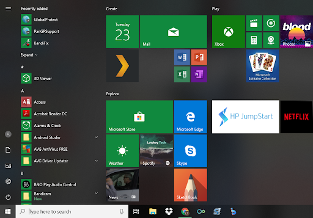
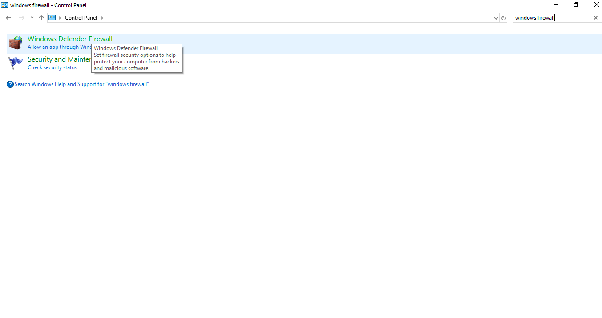
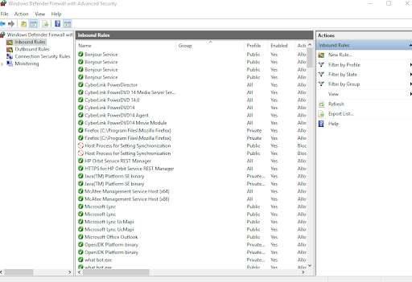
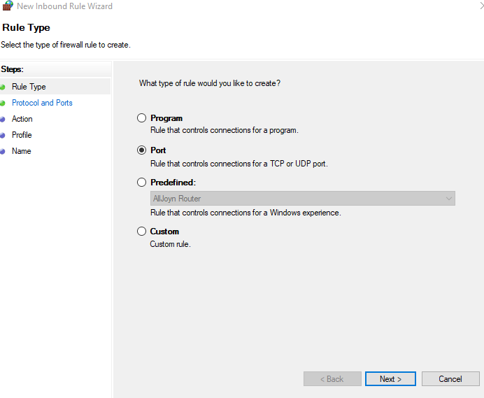
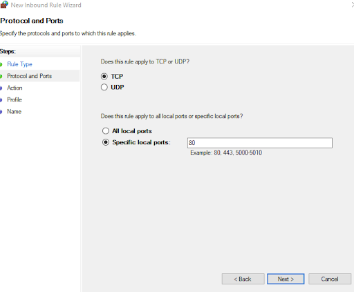
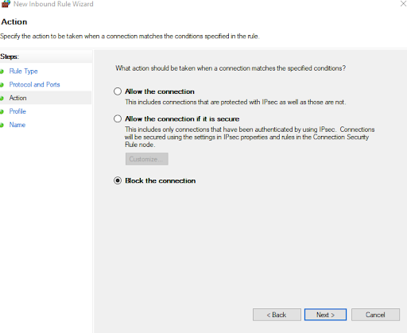
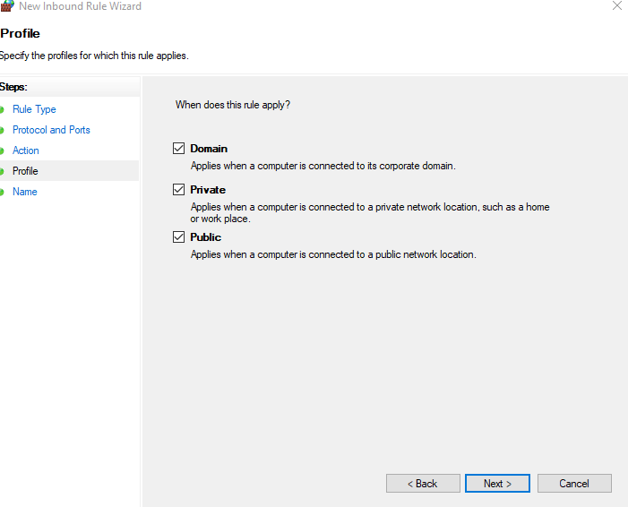
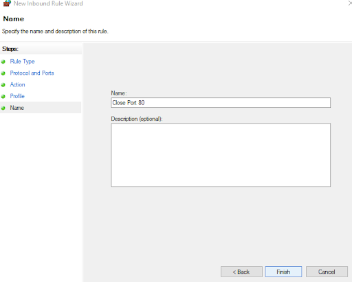

How to close open ports on Windows OS
Before we get into this we want to remind you to not get discouraged, this guide was specifically made to be accessible to a person of ANY experience level.
Step 1: Identify the port you want to close.
As stated above not every port you have open needs to be closed.
Step 2: Getting to your Firewall
In order to close a port navigate to your firewall Press the Start button in the bottom left corner of your screen Click the Control Panel, for newer versions of Windows you can use the search bar to search for it Once in the Control Panel either press “Windows Defender Firewall” or use the search bar in the top right to search for it
 
Step 3: Inbound Rules
Once in the Windows Defender Firewall Window click on “Advanced Settings”, and then click on “Inbound Rules” on the top left

Step 4: New Rule
Either right click on “Inbound Rules” and press “New Rule” or press the New Rule button on the top right
Step 5: Press Port
Press the “Port” button and then click next.

Step 6: Specify Port
Make sure the “TCP” and “Specific local ports” buttons are pressed. And then type in the port or ports you want to close into the textbox. For multiple enter the ports as a comma separated list.

Step 7: Click "Block the connection"
Click “Block the connection” and then press next.

Step 8: Make sure all 4 boxes are checked
Check all 3 boxes and then press next

Step 9: Name the rule and press Finish
Once you press finish the port will be closed!
